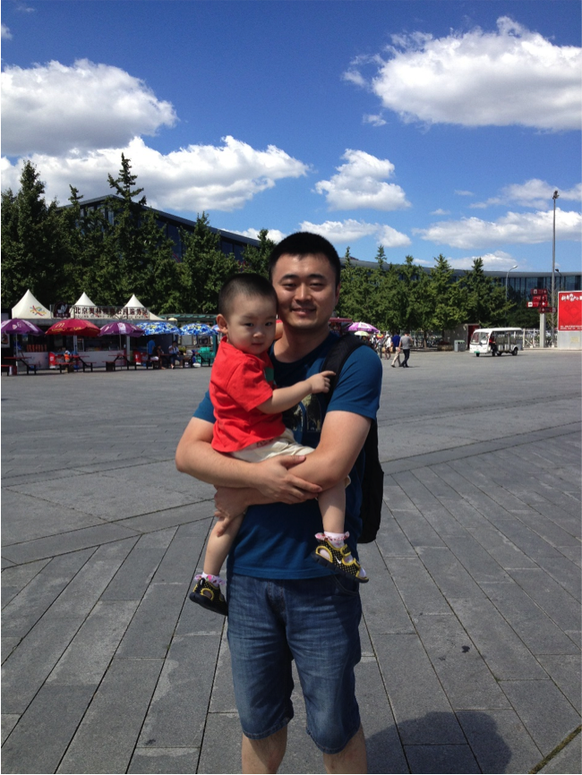

还记得在InfoQ试译的第一篇新闻被笠翔改得面目全非的情形，这让我想起了8年前帮导师翻译书籍的往事。当时我的译稿也被负责该项目的师兄改得面目全非，看着文档上一片一片的红字，我的脸也一阵红一阵白。师兄几乎完全重新翻译了我的那部分，这让我更加愧疚。但正是这样鲜明的对比，让我知道了什么是好的翻译，什么是烂的翻译，以及应该如何翻译得更好。可以说，是这位师兄把我领入了翻译之门。
从08年开始，我跟图灵合作翻译了多本技术书籍，包括《深入理解C#（第2版）》、《精通C#（第6版）》、《C#图解教程（第4版）》、《C#与.NET 4高级程序设计（第5版）》等。然而翻译书和翻译新闻并不尽相同。一般原版书籍的语言都比较浅显，作者往往会不惜笔墨，力求表述得清晰明了。而新闻文字则惜墨如金，尽量用精炼的语言传达更多的含义。因此我在试译的时候就感到极不适应，被笠翔审批得满目疮痍并不出乎我的意料。而且，我还感受到了当年师兄指导我时的那种耐心和责任心。当我私下跟笠翔联系，表达感激之情和惭愧之意时，笠翔说没关系，当年他也被伯薇批得很惨。这让我更加切实地感受到了InfoQ团队一如既往一脉传承一丝不苟的态度。
在当年国内的技术翻译良莠不齐的时候，InfoQ独自扛起大旗，将一大批技术牛人招致麾下，成为InfoQ的兼职编辑。这些牛人保证了翻译质量，使得InfoQ上不计其数的英文新闻和文章也能成为广大国内程序员的精神食粮，不断地拓展着他们的视野，激励着他们前行。我就是那个时候开始关注InfoQ的，同时也梦想着有一天自己也能强大到可以成为他们的一员，通过自己的翻译特长，为广大程序员提供帮助。我曾多次在微博上看到泰稳和国清在招贤纳士，但始终无法鼓足勇气。直到去年8月的某天，我终于给国清发了私信，正式成为了一名光荣的InfoQ编辑。
在编辑的群里，我常常被秀涛的严谨所震撼（他常常在阅读文章时发现感觉不对的地方，就查找原文，找出错误，并在群中提出），被李彬的高产所折服，被各位编辑一起咬文嚼字反复推敲的精神所感动。我为我能找到这样一群志同道合的朋友而感到欣慰。今年的QCon北京，我有幸见到了InfoQ的水哥、赛姐、Jessie、国清等人，以及秀涛、锦龙等跟我同一批成为编辑的兄弟。非常感谢InfoQ组织这样的大会，并且给予我们免费参加的福利。
说了这么多，还没有自我介绍。我叫姚琪琳，现在在ThoughtWorks写代码，对翻译、OO、.NET、Java等十分感兴趣，如果你想跟我交流，可以通过以下方式与我取得联系： Weibo：@珧麒麟， Blog：http://kirinboy.cnblogs.com， Email：kirinboy@gmail.com。